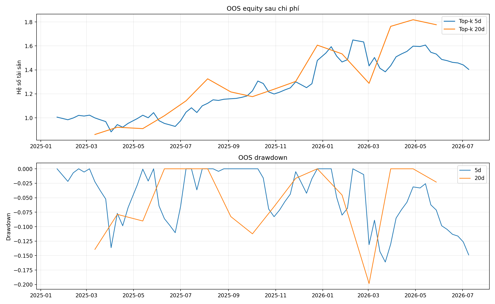

5 phiênRESEARCH_OKRank IC 0.029 · Net 40.43% · Sharpe 0.94
20 phiênRESEARCH_OKRank IC 0.029 · Net 77.70% · Sharpe 1.16
OOS performance

Ranking 5 phiên
Guard fail: không
| Rank | Ma | Prediction | Percentile |
|---|---|---|---|
| 1 | SSI | 0.00741 | 100.00% |
| 2 | VIC | 0.00396 | 91.67% |
| 3 | HCM | 0.00380 | 83.33% |
| 4 | VHM | 0.00318 | 75.00% |
| 5 | HPG | 0.00308 | 66.67% |
| 6 | VNM | 0.00292 | 58.33% |
| 7 | MBB | -0.00061 | 45.83% |
| 8 | TCB | -0.00061 | 45.83% |
| 9 | FPT | -0.00082 | 20.83% |
| 10 | GAS | -0.00082 | 20.83% |
Ranking 20 phiên
Guard fail: không
| Rank | Ma | Prediction | Percentile |
|---|---|---|---|
| 1 | HCM | 0.01208 | 100.00% |
| 2 | HPG | 0.00963 | 91.67% |
| 3 | VNM | 0.00889 | 83.33% |
| 4 | VIC | 0.00805 | 75.00% |
| 5 | MBB | 0.00628 | 66.67% |
| 6 | TCB | 0.00601 | 58.33% |
| 7 | VHM | 0.00588 | 50.00% |
| 8 | FPT | 0.00516 | 25.00% |
| 9 | GAS | 0.00516 | 25.00% |
| 10 | MWG | 0.00516 | 25.00% |
Chỉ dùng cho nghiên cứu. NO_EDGE nghĩa là không đủ bằng chứng OOS sau chi phí.